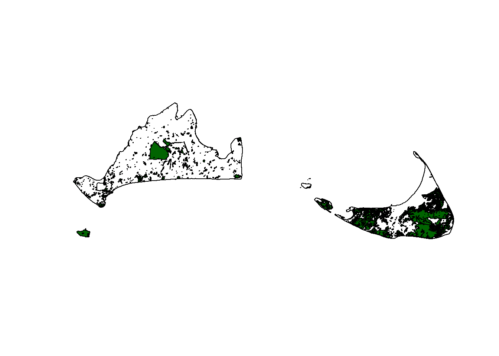
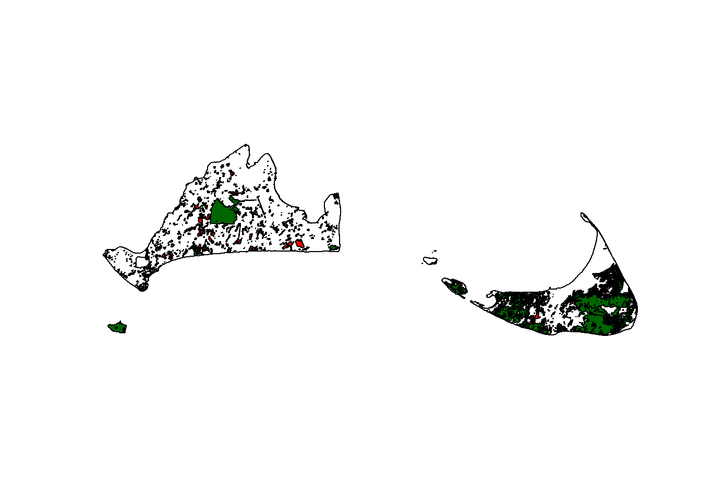
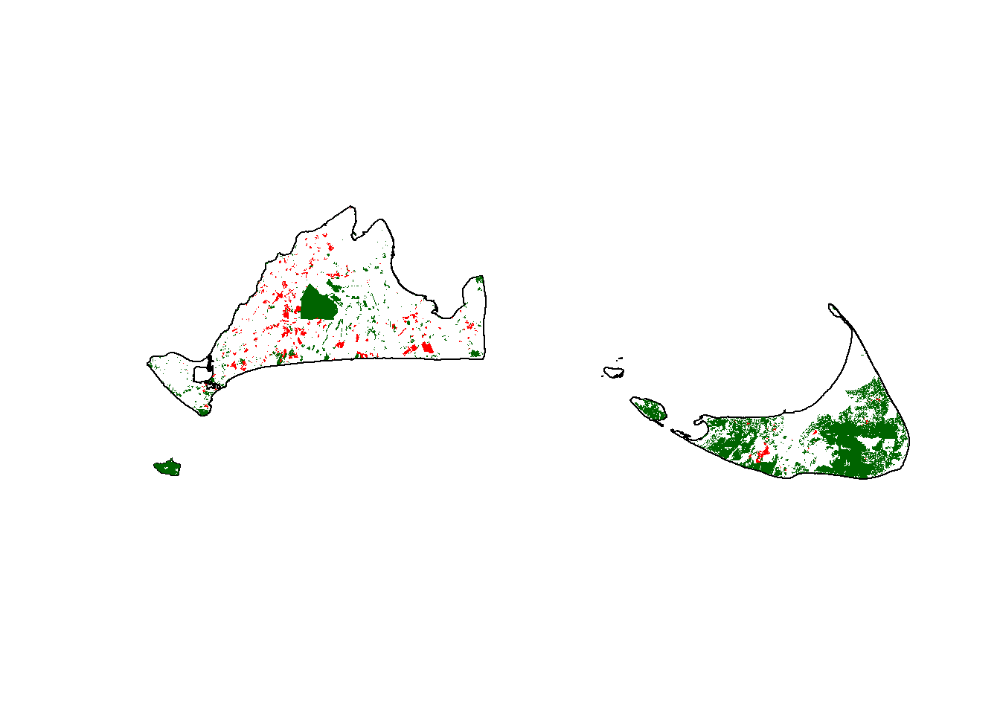
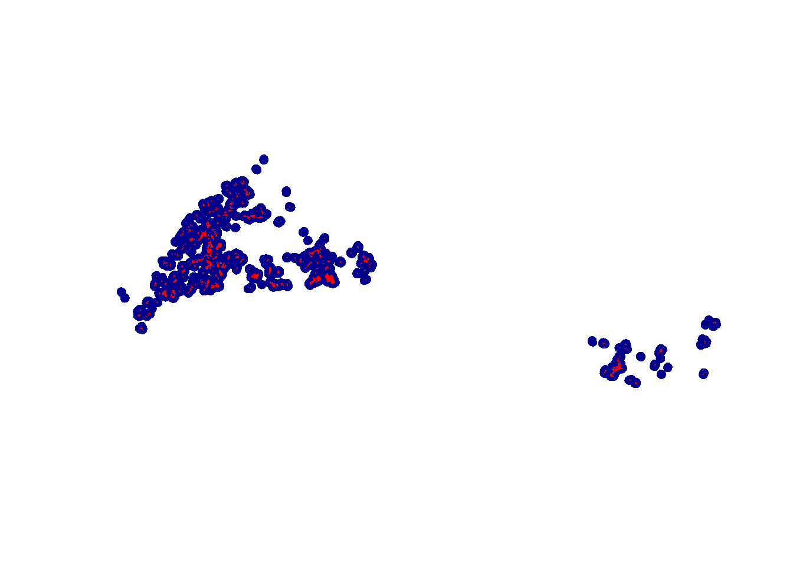
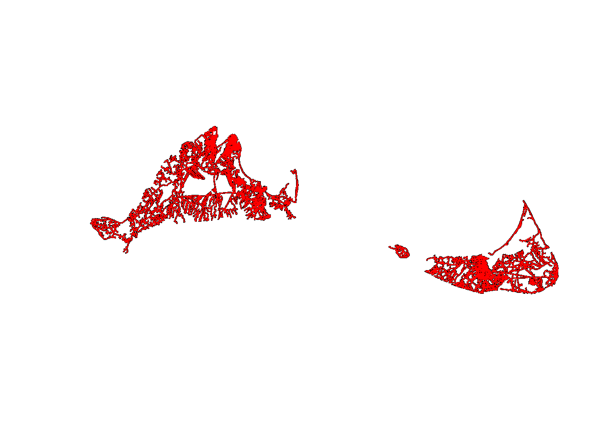
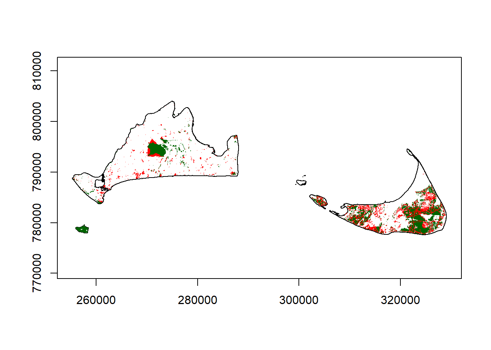

Part 2 Vector data operations
Let’s imagine a scenario: Martha’s Vineyard and Nantucket Islands are home to several endemic species of special concern. You’ve been contracted by the New England Entomological Association to help them identify potential threats for the chain dotted geometer (Cingilia catenaria), a species of moth, in its preferred habitats (Open Land and Brushland/Successional). In addition to habitat loss due to human encroachment, threats include vehicle strikes and pesticides used in agriculture. The NEEA would like to know where the habitats are, and where they are being threatened.
2.1 Adding data
First things first, lets load the data we need to conduct this analysis. There are three files, each starting with the word “island”. Import these as vector datasets.
coasts<-st_read("island_outline.shp")## Reading layer `island_outline' from data source
## `C:\Users\bdav_\Dropbox\Teaching\Spatial R Short Course\Bookdown\Exercise4\island_outline.shp'
## using driver `ESRI Shapefile'
## Simple feature collection with 18 features and 3 fields
## Geometry type: POLYGON
## Dimension: XY
## Bounding box: xmin: 255304.2 ymin: 777606.4 xmax: 329063.4 ymax: 804036.7
## Projected CRS: NAD83 / Massachusetts Mainlandlanduse<-st_read("island_landuse.shp")## Reading layer `island_landuse' from data source
## `C:\Users\bdav_\Dropbox\Teaching\Spatial R Short Course\Bookdown\Exercise4\island_landuse.shp'
## using driver `ESRI Shapefile'
## Simple feature collection with 12269 features and 7 fields
## Geometry type: POLYGON
## Dimension: XY
## Bounding box: xmin: 255304.2 ymin: 777606.4 xmax: 329063.4 ymax: 804036.7
## Projected CRS: NAD83 / Massachusetts Mainlandroads<-st_read("island_roads.shp")## Reading layer `island_roads' from data source
## `C:\Users\bdav_\Dropbox\Teaching\Spatial R Short Course\Bookdown\Exercise4\island_roads.shp'
## using driver `ESRI Shapefile'
## Simple feature collection with 6809 features and 71 fields
## Geometry type: MULTILINESTRING
## Dimension: XY
## Bounding box: xmin: 255536.6 ymin: 777674.6 xmax: 328894.4 ymax: 803946.2
## Projected CRS: NAD83 / Massachusetts Mainland##Getting the moth’s preferred habitats
Next, we want to look at this data and see what sorts of things are stored in it.
head(landuse)## Simple feature collection with 6 features and 7 fields
## Geometry type: POLYGON
## Dimension: XY
## Bounding box: xmin: 310603.8 ymin: 781243.4 xmax: 312451.5 ymax: 783489.9
## Projected CRS: NAD83 / Massachusetts Mainland
## OBJECTID LU05_DESC LUCODE AREA LEN Shape_Leng
## 1 1 Open Land 6 9552.6483 742.6913 742.6913
## 2 2 Brushland/Successional 40 38475.3051 1454.3708 1454.3708
## 3 3 Brushland/Successional 40 1413.9615 150.0112 150.0112
## 4 4 Non-Forested Wetland 4 6961.6412 375.3539 375.3539
## 5 5 Non-Forested Wetland 4 623.2688 161.6040 161.6040
## 6 6 Very Low Density Residential 38 4578.2132 295.8042 295.8042
## Shape_Area geometry
## 1 9552.6483 POLYGON ((310790.1 782366.3...
## 2 38475.3051 POLYGON ((310891.4 783361.4...
## 3 1413.9615 POLYGON ((311090 782745.9, ...
## 4 6961.6412 POLYGON ((311812.4 781292.2...
## 5 623.2688 POLYGON ((312088.9 782272.3...
## 6 4578.2132 POLYGON ((312447.6 783113.7...There’s a few different attributes here, but the one that’s most likely to help us figure out habitats and threats is the LU05_DESC, which is a description of landuse on a parcel of land as observed in 2005. Let’s look at what the unique values are for this attribute:
unique(landuse$LU05_DESC)## [1] "Open Land" "Brushland/Successional"
## [3] "Non-Forested Wetland" "Very Low Density Residential"
## [5] "Low Density Residential" "Water-Based Recreation"
## [7] "Water" "Multi-Family Residential"
## [9] "Nursery" "Forest"
## [11] "Medium Density Residential" "Forested Wetland"
## [13] "Commercial" "Mining"
## [15] "High Density Residential" "Urban Public/Institutional"
## [17] "Industrial" "Saltwater Sandy Beach"
## [19] "Saltwater Wetland" "Transportation"
## [21] "Transitional" "Pasture"
## [23] "Participation Recreation" "Cranberry Bog"
## [25] "Orchard" "Cropland"
## [27] "Golf Course" "Cemetery"
## [29] "Marina" "Junkyard"
## [31] "Waste Disposal" "Powerline/Utility"
## [33] "Spectator Recreation"From the description, we know that the moth’s preferred habitats are in Open Land and Brushland/Successional types of places. We can isolate these by using subset, but since there’s two of them, we can put both inside a vector with c() and then use the %in operator:
preferredHabitats<-subset(landuse,LU05_DESC %in% c("Open Land", "Brushland/Successional"))
head(preferredHabitats)## Simple feature collection with 6 features and 7 fields
## Geometry type: POLYGON
## Dimension: XY
## Bounding box: xmin: 310603.8 ymin: 781961.4 xmax: 312696.2 ymax: 783489.9
## Projected CRS: NAD83 / Massachusetts Mainland
## OBJECTID LU05_DESC LUCODE AREA LEN Shape_Leng
## 1 1 Open Land 6 9552.648 742.6913 742.6913
## 2 2 Brushland/Successional 40 38475.305 1454.3708 1454.3708
## 3 3 Brushland/Successional 40 1413.962 150.0112 150.0112
## 8 8 Open Land 6 19192.743 777.5628 777.5628
## 9 9 Open Land 6 5770.652 409.3352 409.3352
## 11 11 Open Land 6 1872.546 244.6481 244.6481
## Shape_Area geometry
## 1 9552.648 POLYGON ((310790.1 782366.3...
## 2 38475.305 POLYGON ((310891.4 783361.4...
## 3 1413.962 POLYGON ((311090 782745.9, ...
## 8 19192.743 POLYGON ((312527.4 783295.4...
## 9 5770.652 POLYGON ((312548.9 783062.9...
## 11 1872.546 POLYGON ((312668.9 781966.9...Let’s map these out so we can see what we’re looking at.
plot(st_geometry(coasts))
plot(st_geometry(preferredHabitats),col="dark green",add=T)
2.2 Finding potential threats across space
OK, now we know where the moth likes to live, so now we just need to figure out what might harm it in those spaces. The NEEA says that agricultural practices taking place within 500 m of a preferred habitat can be potentially harmful due to pesticide use. So let’s get all of the land where agriculture is practiced first. Have a look at the list of uniqe types we made above and see what you can find.
agLand<-subset(landuse,LU05_DESC %in% c("Orchards","Cropland","Nursery","Pasture"))
head(agLand)## Simple feature collection with 6 features and 7 fields
## Geometry type: POLYGON
## Dimension: XY
## Bounding box: xmin: 315489.3 ymin: 779397.1 xmax: 325471.3 ymax: 785622.1
## Projected CRS: NAD83 / Massachusetts Mainland
## OBJECTID LU05_DESC LUCODE AREA LEN Shape_Leng Shape_Area
## 44 44 Nursery 36 14618.085 501.3215 501.3215 14618.085
## 195 195 Nursery 36 5500.052 341.7689 341.7689 5500.052
## 316 316 Pasture 2 13947.822 561.6673 561.6673 13947.822
## 525 525 Pasture 2 5506.502 333.6362 333.6362 5506.502
## 633 633 Pasture 2 20194.599 950.6085 950.6085 20194.599
## 680 680 Pasture 2 3839.795 288.5467 288.5467 3839.795
## geometry
## 44 POLYGON ((315642.4 780119.4...
## 195 POLYGON ((319304.7 780369, ...
## 316 POLYGON ((324900.6 779597.9...
## 525 POLYGON ((325469.7 785122.3...
## 633 POLYGON ((316148.8 782462.1...
## 680 POLYGON ((325463.1 785607.7...I’ve decided to leave out the Vineyard’s boutique cranberry bogs for now to keep things simple, but you can select any you think might be threatening. Lets see what this looks like with our preferred habitats.
plot(st_geometry(coasts))
plot(st_geometry(preferredHabitats),col="dark green",add=T)
plot(st_geometry(agLand),col="red",add=T)
With all that we’re plotting, this graphic is getting hard to read. One way to alleviate that is to eliminate the borders from some of our polygon data:
plot(st_geometry(coasts))
plot(st_geometry(preferredHabitats),col="dark green",border=NA,add=T)
plot(st_geometry(agLand),col="red",border=NA,add=T)
Much better. Hmmm… looks like there may be some adjacency that is within 500m. Only one way to be sure, though.
##Buffer
The tool we want to figure out areas within a given distance from our agricultural areas is the st_buffer tool. This is not dissimilar to a buffer tool that is common in desktop GIS. First, we’ll want to know what linear units our agricultural land vector data is using. We can get that using st_crs and accessing the units from the coordinate system.
st_crs(agLand)$units## [1] "m"Cool, we’re in meters, which is what we want to do. If it were something else, we might want to change coordinate systems, or convert our 500 m value into whatever units we’re using. Now we’re good to go with st_buffer.
#Make agricultural buffer and plot
agBuffer<-st_buffer(agLand,500)
plot(st_geometry(agBuffer),col="dark blue",border=NA)
plot(st_geometry(agLand),col="red",border=NA,add=T)
This is an excellent example of the kind of tedious grunt work that we leave the computer to do. If we were to do this by hand, depending on how precise we wanted to be, this could take quite some time to figure out where 500 m away from the edge of an agricultural parcel is. Thankfully, we don’t have to, and we can get on with asking spatial questions.
Now we have our agricultural land, and the buffers indicating spaces that might threaten our moth species. We need to do the same for roads, although here the threat is more localized. The NEEA says a 50 m margin should work fine for roads.
#Make road buffer and plot
roadBuffer<-st_buffer(roads,50)
plot(st_geometry(roadBuffer),col="dark blue")
plot(st_geometry(roads),col="red",add=T)
##Intersection
As a last step, we want to see where our preferredHabitats overlap with our various threat buffers. For this operation, we can use the st_intersection function.
agThreat<-st_intersection(preferredHabitats,agBuffer)## Warning: attribute variables are assumed to be spatially constant throughout all
## geometriesroadThreat<-st_intersection(preferredHabitats,roadBuffer)## Warning: attribute variables are assumed to be spatially constant throughout all
## geometriesWe’ve seen this warning before, and there isn’t anything really in our data that is affected (at least not any that we are going to use). Now we should be able to show where on the islands our moths might be affected and where they’ll be OK. Let’s make a nice plot (with axes!) we can give to the NEEA to bring to town meetings:
plot(st_geometry(coasts),axes=T)
plot(st_geometry(preferredHabitats),col="dark green",border=NA,add=T)
plot(st_geometry(agThreat),col="red",border=NA,add=T)
plot(st_geometry(roadThreat),col="red",border=NA,add=T)
2.3 Try it yourself
See if you can do the following with this dataset:
- The local residents are likely to be a little peeved about any new restrictions on the roadsides. How does this look if you decrease the road buffer from 50 to 10 meters? Or maybe they’ll be very much on board and want it to be 100 meters! Try out some values.
- Mines are not particularly good for this moth species either. What happens if you add mines to the list of hazards?